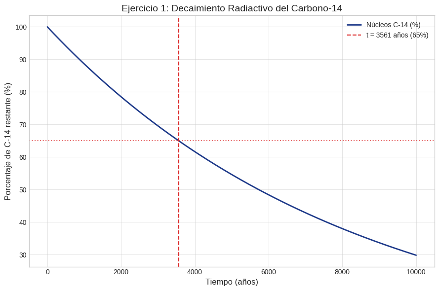
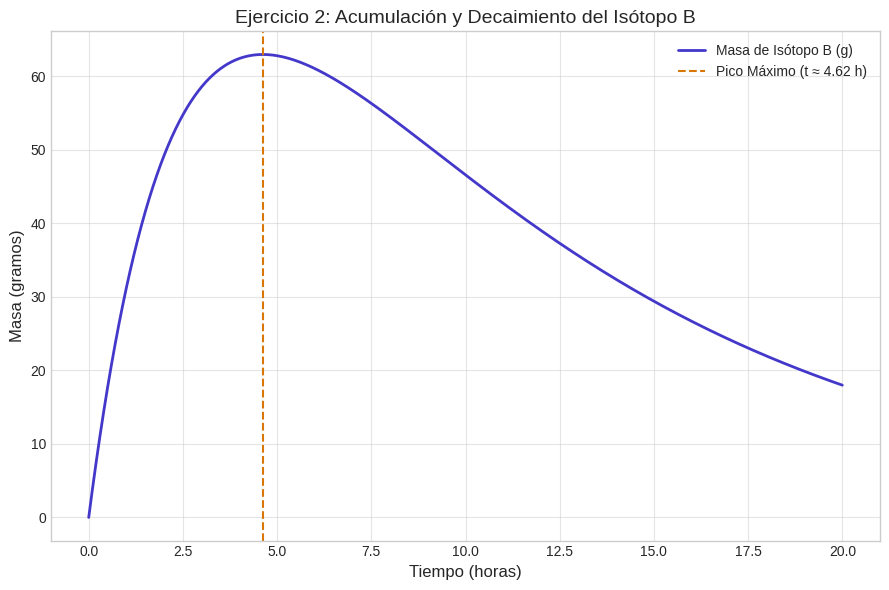
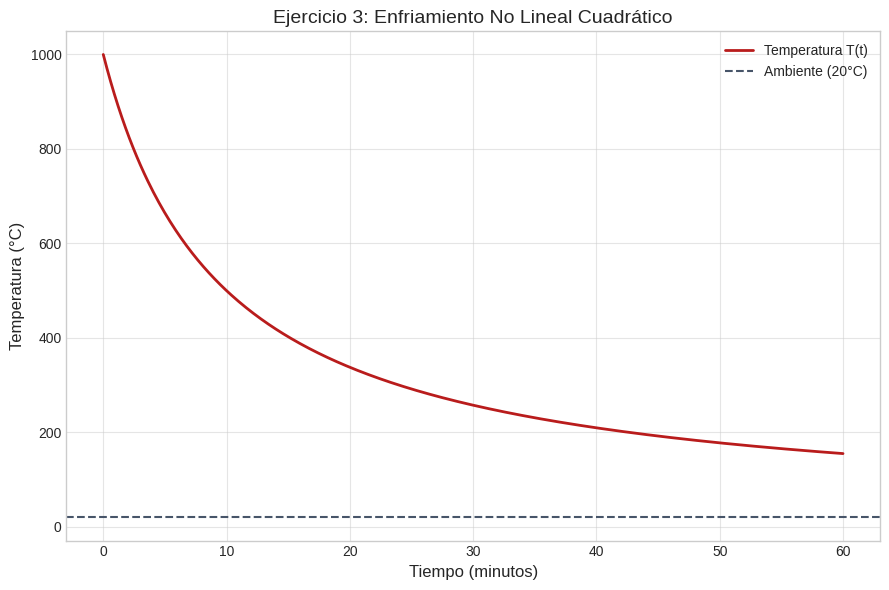
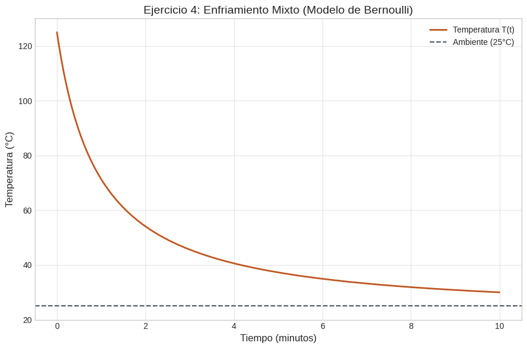
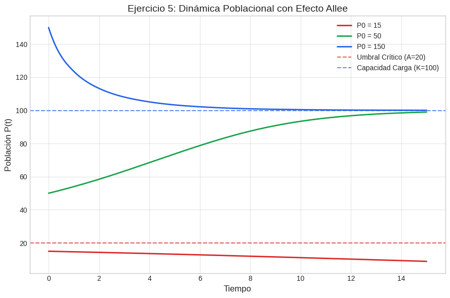
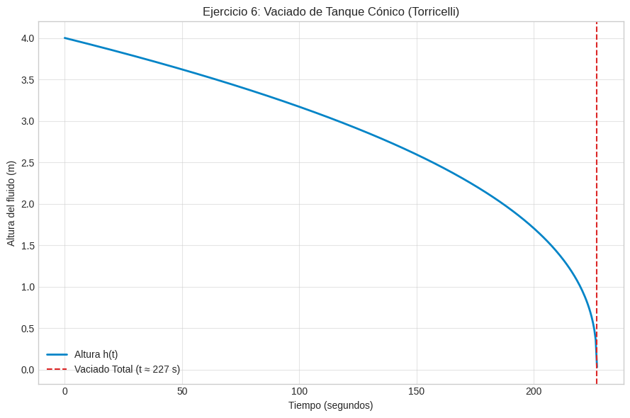

Tras dominar las técnicas de integración analítica para Ecuaciones Diferenciales de primer orden (Separables, Homogéneas, Lineales y Bernoulli), esta sesión se enfoca en su aplicación en contextos reales. A lo largo de esta sección, utilizaremos estos métodos para modelar sistemas cuya evolución depende de su razón de cambio. Analizaremos casos de estudio prácticos que van desde la física nuclear (decaimiento radiactivo y cadenas de desintegración) y la termodinámica (modelos de enfriamiento/calentamiento), hasta la ecología (dinámica poblacional) y la hidráulica (ley de Torricelli), demostrando cómo una misma estructura matemática permite dar solución a problemas diversos del entorno real.
Iniciamos resolviendo la ecuación diferencial mediante el método de variables separables. Agrupamos los términos con la variable de estado $N$ en el lado izquierdo y los términos temporales en el lado derecho:
$$ \frac{dN}{N} = -\lambda \, dt $$Integrando de manera indefinida a ambos lados de la igualdad:
$$ \int \frac{dN}{N} = \int -\lambda \, dt \implies \ln|N| = -\lambda t + C_1 $$Aplicando la función exponencial a ambos miembros para despejar la función $N(t)$:
$$ N(t) = e^{-\lambda t + C_1} = e^{C_1} e^{-\lambda t} = N_0 e^{-\lambda t} $$donde $N_0 = N(0)$ representa la cantidad inicial de núcleos de Carbono-14 presentes al momento en que el organismo dejó de intercambiar carbono con la atmósfera.
Para determinar la constante de decaimiento $\lambda$, empleamos el concepto de vida media (\(t_{1/2} = 5730\) años), definida como el tiempo requerido para que la sustancia se reduzca a la mitad (\(N(t_{1/2}) = \frac{N_0}{2}\)):
$$ \frac{N_0}{2} = N_0 e^{-\lambda (5730)} \implies \frac{1}{2} = e^{-5730 \lambda} $$ $$ \ln\left(\frac{1}{2}\right) = -5730 \lambda \implies \lambda = \frac{\ln(2)}{5730} \approx 1.2097 \times 10^{-4} \text{ años}^{-1} $$Sustituimos la información del hallazgo arqueológico, donde $N(t) = 0.65 N_0$:
$$ 0.65 N_0 = N_0 e^{-\lambda t} \implies 0.65 = e^{-\lambda t} $$ $$ \ln(0.65) = -\lambda t \implies t = -\frac{\ln(0.65)}{1.2097 \times 10^{-4}} \approx \frac{-0.43078}{-0.00012097} \approx 3561.05 \text{ años} $$Por lo tanto, la antigüedad calculada del pergamino es aproximadamente de 3561 años.

La ecuación diferencial dada es una Ecuación Lineal de Primer Orden en la forma estándar $y' + P(t)y = Q(t)$, donde $P(t) = \lambda_2 = 0.1$ y $Q(t) = \lambda_1 N_0 e^{-\lambda_1 t} = (0.4)(100)e^{-0.4 t} = 40 e^{-0.4 t}$.
Calculamos el factor integrante $\mu(t)$:
$$ \mu(t) = e^{\int P(t) \, dt} = e^{\int 0.1 \, dt} = e^{0.1 t} $$Calculamos $I=\int \mu(t) Q(t) dt$:
$$ I= \int{ 40 e^{-0.4 t} e^{0.1 t} dt } = 40 \int{ e^{-0.3 t} dt} = -\frac{400}{3} e^{-0.3 t} $$Finalmente, la solución es::
$$ y(t) =\frac{I+C}{\mu}=\frac{ -\frac{400}{3} e^{-0.3 t} +C }{ e^{0.1 t} } = -\frac{400}{3} e^{-0.4 t} + C e^{-0.1 t} $$Aplicando la condición inicial $y(0) = 0$ para hallar la constante arbitraria $C$ se tiene:
$$ 0 = -\frac{400}{3} e^0 + C e^0 \implies C = \frac{400}{3} $$Sustituyendo el valor de $C$, la solución para la cantidad de isótopo B en función del tiempo es:
$$ y(t) = \frac{400}{3} \left( e^{-0.1 t} - e^{-0.4 t} \right) \text{ gramos} $$
Esta es una ecuación diferencial de variables separables. Sustituyendo $T_a = 20$, agrupamos los términos de temperatura a la izquierda:
$$ \frac{dT}{(T - 20)^2} = -k \, dt $$Integrando ambos lados del modelo:
$$ \int (T - 20)^{-2} \, dT = \int -k \, dt \implies -\frac{1}{T - 20} = -kt + C $$ $$ \frac{1}{T - 20} = kt - C_1 \quad (\text{donde } C_1 = -C) $$Evaluamos la condición inicial $T(0) = 1000$ para determinar $C_1$:
$$ \frac{1}{1000 - 20} = k(0) - C_1 \implies -C_1 = \frac{1}{980} \implies C_1 = -\frac{1}{980} $$ $$ \frac{1}{T - 20} = kt + \frac{1}{980} $$Utilizamos el segundo dato experimental $T(10) = 500$ para determinar la constante de transferencia de calor $k$:
$$ \frac{1}{500 - 20} = 10k + \frac{1}{980} \implies \frac{1}{480} = 10k + \frac{1}{980} $$ $$ 10k = \frac{1}{480} - \frac{1}{980} = \frac{980 - 480}{470400} = \frac{500}{470400} = \frac{5}{4704} \implies k = \frac{1}{9408} \approx 0.00010629 \text{ min}^{-1} $$Despejando $T(t)$ de la relación algebraica obtenemos la ley de temperatura: $$ T(t) = 20 + \frac{1}{\frac{t}{9408} + \frac{1}{980}} = 20 + \frac{9408}{t + 9.6} \, ^\circ\text{C} $$

Para simplificar la estructura de la ecuación diferencial, realizamos primero la sustitución $u(t) = T(t) - 25$. Como $\frac{du}{dt} = \frac{dT}{dt}$, sustituimos en la expresión original:
$$ \frac{du}{dt} + 0.1 u = -0.01 u^2 $$Esta es una Ecuación Diferencial de Bernoulli con $n = 2$. Dividimos toda la ecuación entre $u^2$:
$$ u^{-2} \frac{du}{dt} + 0.1 u^{-1} = -0.01 $$Efectuamos el cambio de variable clásico de Bernoulli: $v = u^{1-n} = u^{1-2} = u^{-1}$. Su derivada es $\frac{dv}{dt} = -u^{-2} \frac{du}{dt}$, por lo que $-u^{-2} \frac{du}{dt} = -\frac{dv}{dt}$. Sustituyendo en la ecuación:
$$ -\frac{dv}{dt} + 0.1 v = -0.01 \implies \frac{dv}{dt} - 0.1 v = 0.01 $$Esta es una lineal de primer orden para $v(t)$. Su factor integrante es $\mu(t) = e^{\int -0.1 dt} = e^{-0.1 t}$:
$$ \frac{d}{dt} \left[ v e^{-0.1 t} \right] = 0.01 e^{-0.1 t} $$ $$ v e^{-0.1 t} = \int 0.01 e^{-0.1 t} \, dt = -\frac{0.01}{0.1} e^{-0.1 t} + C = -0.1 e^{-0.1 t} + C $$ $$ v(t) = -0.1 + C e^{0.1 t} $$Regresamos a la variable $u(t) = \frac{1}{v(t)}$ y evaluamos la condición inicial $T(0) = 125 \implies u(0) = 125 - 25 = 100$. Por ende, $v(0) = \frac{1}{100} = 0.01$:
$$ 0.01 = -0.1 + C e^0 \implies C = 0.11 $$Reconstruimos la solución explícita para la temperatura $T(t)$:
$$ u(t) = \frac{1}{-0.1 + 0.11 e^{0.1 t}} \implies T(t) = 25 + \frac{1}{0.11 e^{0.1 t} - 0.1} \, ^\circ\text{C} $$
El modelo presenta tres puntos de equilibrio donde $\frac{dP}{dt} = 0$: $P = 0$ (extinción), $P = 20$ (umbral crítico $A$) y $P = 100$ (capacidad de carga $K$).
Separamos variables para obtener la forma integral:
$$ \frac{dP}{P \left( \frac{P}{20} - 1 \right) \left( 1 - \frac{P}{100} \right)} = 0.1 \, dt $$ $$ \frac{2000 \, dP}{P (P - 20) (100 - P)} = 0.1 \, dt \implies \frac{dP}{P (P - 20) (100 - P)} = 0.00005 \, dt $$Descomponemos el lado izquierdo en fracciones parciales:
$$ \frac{1}{P (P - 20) (100 - P)} = \frac{A_1}{P} + \frac{A_2}{P - 20} + \frac{A_3}{100 - P} $$Multiplicando por el denominador común y resolviendo para los coeficientes:
Integrando cada término logarítmico:
$$ -\frac{1}{2000} \ln|P| + \frac{1}{1600} \ln|P - 20| - \frac{1}{8000} \ln|100 - P| = 0.00005 t + C $$Análisis Cualitativo del Comportamiento: Dado que la población inicial es $P(0) = 50$, se cumple que $20 < P(0) < 100$. Evaluamos el signo de la derivada en $P = 50$:
$$ \left. \frac{dP}{dt} \right|_{P=50} = 0.1(50) \left( \frac{50}{20} - 1 \right) \left( 1 - \frac{50}{100} \right) = 5 (1.5) (0.5) = 3.75 > 0 $$Dado que la derivada es estrictamente positiva sobre el intervalo $(20, 100)$, la población crecerá sostenidamente alejándose del umbral de extinción $A=20$ y aproximándose asintóticamente a la capacidad de carga del ecosistema:
$$ \lim_{t \to \infty} P(t) = 100 \text{ individuos} $$ En la figura siguiente se muestra el comportamiento en este caso.
Por semejanza de triángulos en el cono, el radio de la superficie libre a una altura $h$ es $r(h) = \frac{R}{H} h = \frac{2}{4} h = \frac{1}{2} h$. El área de la sección transversal es $A(h) = \pi r^2 = \frac{\pi}{4} h^2$.
Sustituyendo $\sqrt{2g} = \sqrt{2(9.8)} = \sqrt{19.6} \approx 4.4272$ en la ecuación diferencial:
$$ \frac{\pi}{4} h^2 \frac{dh}{dt} = -0.01 (4.4272) \sqrt{h} = -0.044272 \sqrt{h} $$Separando las variables $h$ y $t$:
$$ \frac{h^2}{\sqrt{h}} \, dh = -\frac{4(0.044272)}{\pi} \, dt $$ $$ h^{3/2} \, dh = -0.05637 \, dt $$Integrando ambos lados de la expresión:
$$ \int h^{3/2} \, dh = \int -0.05637 \, dt \implies \frac{2}{5} h^{5/2} = -0.05637 t + C $$Aplicamos la condición inicial $h(0) = 4\text{ m}$ para calcular $C$:
$$ \frac{2}{5} (4)^{5/2} = -0.05637(0) + C \implies C = 0.4 \times 32 = 12.8 $$La ecuación que describe la altura del fluido en cualquier instante $t$ es:
$$ \frac{2}{5} h^{5/2} = 12.8 - 0.05637 t \implies h(t) = \left( 32 - 0.140925 t \right)^{2/5} $$Para hallar el tiempo total de vaciado $t_{\text{vaciado}}$, hacemos la altura igual a cero ($h = 0$):
$$ 32 - 0.140925 t_{\text{vaciado}} = 0 \implies t_{\text{vaciado}} = \frac{32}{0.140925} \approx 227.07 \text{ segundos} $$El tanque cónico se vacía por completo en aproximadamente 227 segundos ($\approx 3.78\text{ minutos}$).

A diferencia del tanque cilíndrico (cuya altura decrece de forma parabólica), el cono reduce la superficie de agua a medida que baja el nivel, causando que la altura decrezca de forma acelerada conforme $h \to 0$..
Copia y pega el siguiente prompt en un modelo de lenguaje para poner a prueba tus habilidades de modelado formal:
Actúa como un profesor de física matemática. Plantéame un problema práctico
sobre la Ley de Torricelli o el Enfriamiento de Newton con valores numéricos concretos.
No me des la respuesta de inmediato. Pídeme que plantee la Ecuación Diferencial
y la resuelva paso a paso. Corrige mis cálculos numéricos y mis unidades físicas
en cada interacción.
Resuelve los siguientes ejercicios de aplicación práctica y conceptual para validar tu comprensión de la sesión.